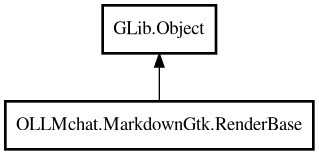

RenderBase
Object Hierarchy:

Description:
public abstract class RenderBase : Object
Base abstract class for renderers that use the Parser.
Provides parser setup and callback interface without requiring buffer or mark functionality. Subclasses implement the callback methods to
handle parsed content.
Content:
Properties:
Creation methods:
Methods:
- public void add (string text)
Main method: adds text to be parsed and rendered.
- public void add_start (string text, bool is_end_of_chunks = false)
Starts a new chunk of content. This resets the parser's internal state
and should be called when beginning a new content block.
- public void flush ()
Finalizes the current chunk. Call this before starting a new chunk
with add_start to ensure all pending content is processed.
Inherited Members:
All known members inherited from class GLib.Object
- @get
- @new
- @ref
- @set
- add_toggle_ref
- add_weak_pointer
- bind_property
- connect
- constructed
- disconnect
- dispose
- dup_data
- dup_qdata
- force_floating
- freeze_notify
- get_class
- get_data
- get_property
- get_qdata
- get_type
- getv
- interface_find_property
- interface_install_property
- interface_list_properties
- is_floating
- new_valist
- new_with_properties
- newv
- notify
- notify_property
- ref_count
- ref_sink
- remove_toggle_ref
- remove_weak_pointer
- replace_data
- replace_qdata
- set_data
- set_data_full
- set_property
- set_qdata
- set_qdata_full
- set_valist
- setv
- steal_data
- steal_qdata
- thaw_notify
- unref
- watch_closure
- weak_ref
- weak_unref